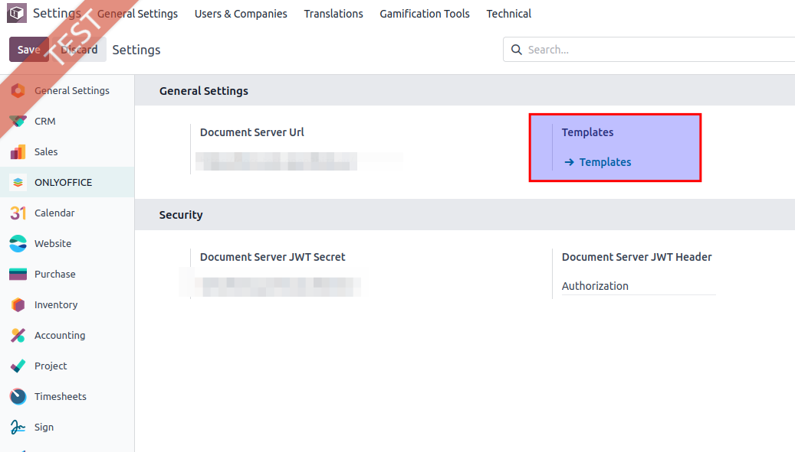
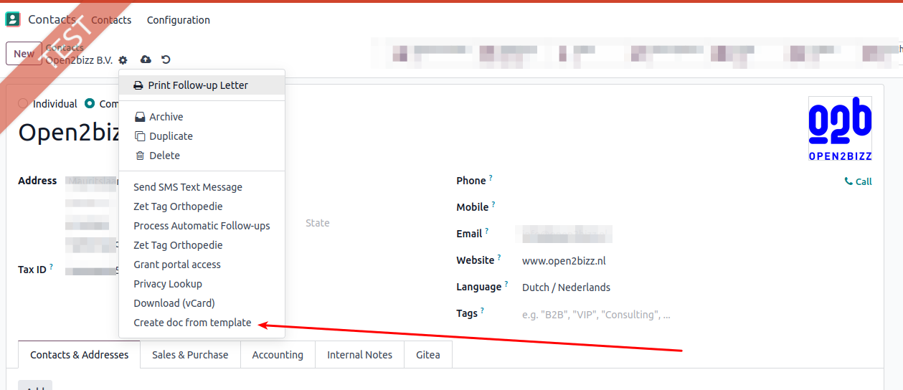

BASE module Templates ONLYOFFICE
Options and data for adding templates OnlyOffice, and using them for partners
- First add one or more templates. Goto Settings -> Onlyoffice
- Click on the link "Templates" to view and add a template
- Add ad template and select Model "Contact (res.partner)". As specified in default Onlyoffice editor for ONLINE select file type .DOCX, .XLSX or .PPTX. Optional you can add a different preview image to be shown when selected later.
- When this is done goto Partners (maybe first install module contacts)
- Open a Contact (res.partner) in detail view
- Under the action menu there is a function to add a new doc based on a template
|  |  |
Module is developed by Open2Bizz. Bug reports: support@open2bizz.eu